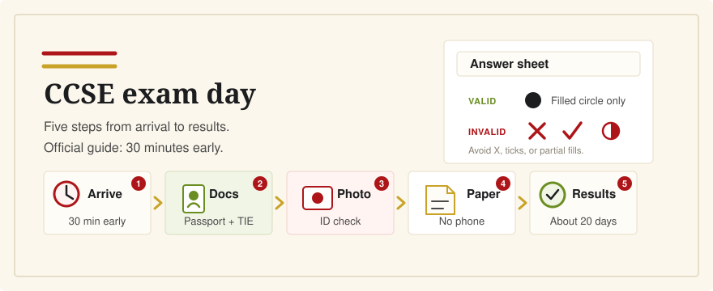

What Happens on CCSE Exam Day?
Last verified: June 6, 2026
The CCSE is short, but exam day has a few practical details that can surprise people: identity checks, a photo, a paper answer sheet, and centrally processed results.

Follow the time in your registration or center email, and give yourself extra time for identification before the exam starts. The official guide describes candidates being called at least 30 minutes before the test. Bring your CCSE registration receipt and original identity documents, usually passport and TIE for nationality-by-residence candidates. The ordinary CCSE is a paper test, not an app-based test, and results are normally communicated about 20 days later through your private exam portal.
Arrive Early
Instituto Cervantes says candidates must go to the exam center, date, and time shown in their registration receipt. The center may call candidates to arrive before the test starts so staff can check documents, take a photo, and explain how the test will be administered.
If your center gives you a specific arrival time, use that. If it only gives the test start time, do not plan to walk in at the last minute. The official CCSE guide describes candidates being called at least 30 minutes before the exam for identification and instructions, and late arrivals do not receive extra time.
Expect a Group Session
The ordinary CCSE is administered in an exam room by center staff. You may be seated with other candidates, assigned a place, and asked to follow the administrator's instructions in silence. The official guide says candidates must follow the center's instructions and may only ask questions about the administration of the test, not the content of the questions.
Bring the Right Documents
For candidates applying for Spanish nationality by residence, the official FAQ lists the registration receipt received by email plus original passport and TIE documents. The TIE includes the NIE. If you have a dispensation from the Ministry of Justice, bring that too.
There are special rules for EU citizens, stateless candidates, refugees, and exceptional cases such as theft, renewal, or documents retained by a court or visa process. Check the official FAQ and any email from your exam center before the day of the test. Do not assume that a copy or photo of a document will be enough.
They Take a Photo
Identification is not only a quick name check. Instituto Cervantes says candidates are identified before the test, their documentation is checked, and a photograph is taken. The FAQ also notes that head coverings must allow reliable identification and must not hide devices that are not allowed in the room.
The Test Is on Paper
The CCSE app is for preparation. On exam day, the official format page says the test is presented on exam sheets with the questions and possible answers. The guide says the center provides the material needed for the test, including a number 2 pencil and eraser.
Do not plan to take the test on your phone, tablet, or computer. The official rules prohibit mobile phones and electronic devices during the test unless Instituto Cervantes has expressly authorized an accommodation.
Mark the Answer Sheet Carefully
The CCSE is graded automatically from the answer sheets. Only the answers marked on the official answer sheet are valid, so treat it like a machine-scanned standardized test: fill in the circle completely for one answer, and do not use X's, checkmarks, partial marks, or notes in place of a filled answer circle.
If you change an answer, use only the eraser provided by the center. The official guide says candidates should answer with a number 2 pencil and should not use correction fluid or similar products.
Results Take About 20 Days
Instituto Cervantes says CCSE results are normally communicated about 20 days after the test. The first stage is automatic reading of the answer sheets, then the academic team checks global results by center or country before grades are published.
Your certificate shows the global result: Apto, No apto, or No presentado. It does not show your exact score.
Use the Official Question Bank
Instituto Cervantes says its official CCSE app is the only official app for preparation and contains the updated 300 questions corresponding to the official CCSE test. It also says the current manual contains the questions used in tests during the year.
That is why CCSE English keeps the official Spanish question wording visible while adding English translations and explanations. It is an independent study tool, not an official app or replacement for Instituto Cervantes materials.
Related Guides
- What is the CCSE exam?
- How many questions can I miss?
- Best CCSE study resources for English speakers
- What happens if I fail?
Sources
- Instituto Cervantes: CCSE frequently asked questions
- Instituto Cervantes: How the CCSE exam works
- Instituto Cervantes: CCSE exam guide
- Instituto Cervantes: CCSE grades, certificates, and results
- Instituto Cervantes: CCSE preparation materials
Practice with the official Spanish wording, English translations, and explanations before you switch to timed Spanish-only mocks.